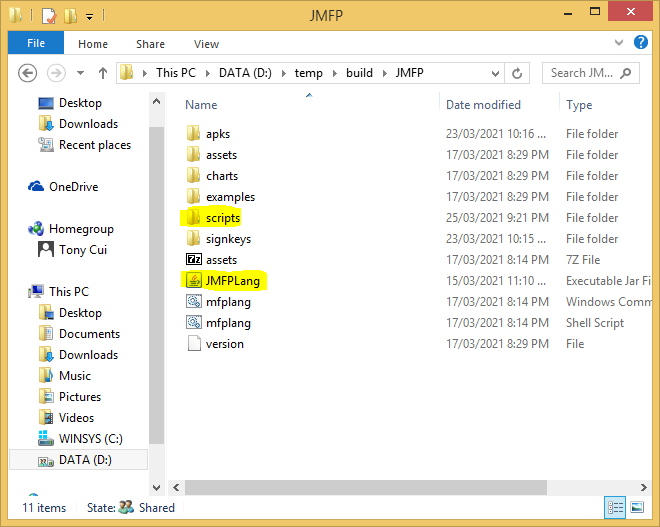
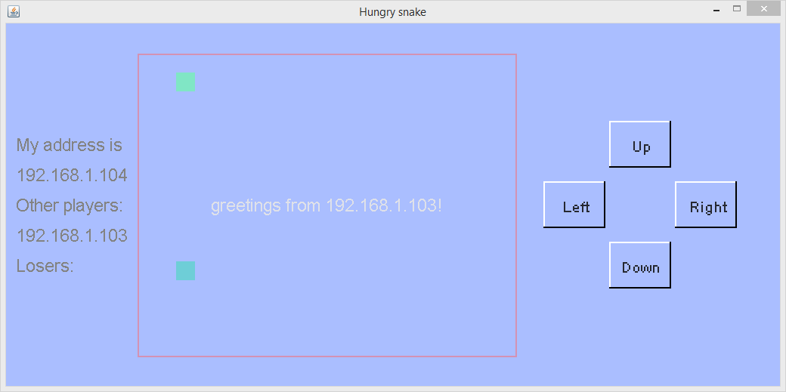

多设备多玩家的贪吃蛇游戏是基于单玩家的贪吃蛇游戏发展而来的。它和单玩家的贪吃蛇游戏有相似的界面。但是和单玩家贪吃蛇游戏不一样的是，这个游戏不分等级，游戏中的所有玩家相互竞争。如果一个玩家的蛇撞到了自己或者另外一个玩家的蛇，这个玩家就输了。为了让游戏比较容易玩，仅仅允许2到4个玩家参与游戏，并且游戏中没有墙。
请注意，此多设备多玩家的贪吃蛇游戏只是一个起着抛砖引玉作用的示例。它没有考虑许多问题。比如，如何在所有玩家之间同步游戏状态以及如何防止死锁。由于这些问题的存在，有时当第三名或第四名玩家加入时，游戏可能会死锁，因为所有玩家都在等待其他玩家的状态消息。此外，一条蛇可能会穿过而不会撞到其他蛇的身体，这是因为有些玩家收到了其他蛇位置的滞后信息。无论如何，示例必须简单易懂，因此并发/并行编程不是此处的主要重点。
该游戏采用TCPIP协议在设备之间进行通信。因此，在游戏开始时，要求玩家输入自己设备的IP地址。MFP能够检测到设备使用的所有IP地址，并且它将向玩家提供IP地址列表，因此玩家仅需要从列表中选择正确的地址。然后，玩家需要键入已经加入游戏的远程设备中的一个的IP地址。如果是第一个加入游戏的玩家，则只需按Enter键即可跳过此输入，然后游戏就会开始。请注意，每个游戏中最多有四个玩家，并且一个IP地址不能被多个玩家使用。
以下函数用于列出一个设备所使用的所有IP地址。
function print_all_host_tcp_addresses()
variable all_local_addresses
all_local_addresses = get_all_host_addresses("TCPIP")[0,1]
for variable index = 0 to size(all_local_addresses)[0] - 1 step 1
variable all_interface_addresses = all_local_addresses[index]
if size(all_interface_addresses[1])[0] == 0
continue
endif
print("============= " + all_local_addresses[index, 0] + " =============\n")
for variable index1 = 0 to size(all_interface_addresses)[1] - 1 step 1
variable interface_addr = all_interface_addresses[1,index1]
print(interface_addr + "\n")
next
next
endf
当游戏开始时，第一个玩家将等待其他玩家加入。另一名玩家加入游戏后，蛇开始在屏幕上移动。如果其中一名玩家撞到另一条蛇或自身，则该玩家将从游戏中被踢出，而其他玩家继续玩。一旦被踢出局，玩家将无法重新加入游戏，直到重新开始整个游戏。
不同的玩家设备之间相互通信是采用发送消息的方式。每一个设备都有一个客户端和一个服务端。客户端用于给别的设备发送消息而服务端用于接收和处理别的设备传来的消息。以下代码展示了如何启动一个服务端对设备的IP地址进行监听。
variable protocol = "TCPIP", local_address, server_address, local_interface, remote_interface, ret
variable my_address = input("My TCPIP address is:\n", "S")
local_address = my_address
local_interface = ::mfp::paracomp::connect::generate_interface(protocol, local_address)
... ...
ret = ::mfp::paracomp::connect::initialize_local(local_interface, true) // make local_interface a server. 讓local_interface做服務器
print("initialize_local server ret = " + ret + "\n")
ret = ::mfp::paracomp::connect::listen(local_interface)
print("listen ret = " + ret + "\n")
if !ret
throw "Cannot listen to " + local_interface
endif
对于客户端，由于无需进行监听，所以初始化代码简单得多，仅仅需要调用initialize_local函数即可，参见以下代码。
variable protocol = "TCPIP", local_address, server_address, local_interface, remote_interface, ret
variable my_address = input("My TCPIP address is:\n", "S")
local_address = my_address
... ...
ret = ::mfp::paracomp::connect::initialize_local(local_interface, false) // make local_interface a client. 讓local_interface做客戶端。
客户端需要和所有远端设备的服务端建立连接。建立连接是通过调用connect函数进行。以下代码展示了如何使用该函数。注意该函数接受网络界面（interface）而不是IP地址作为参数。这样一来，开发人员需要调用generate_interface函数根据远端的IP地址创建一个远端服务端的网络界面。
remote_interface = ::mfp::paracomp::connect::generate_interface(protocol, server_address) // server address // 服务器地址
ret = ::mfp::paracomp::connect::connect(local_interface, remote_interface)
print("connect ret = " + ret + "\n")
variable conn = ::mfp::data_struct::array_based::get_value_from_abdict(ret, "CONNECT") // conn is the connection object // conn就是连接对象
建立连接后，客户端可以通过调用函数send_sandbox_message将消息发送到服务端。此函数的使用方式非常复杂。它具有四种工作模式，即从沙盒向其本地主实体发送消息；从主实体或沙盒向本地沙盒发送消息；从本地沙盒或主实体向远程主实体发送消息；以及从本地沙盒或主实体向远程沙盒发送消息。为了完全理解此函数，开发人员需要具有MFP并行编程模型的基础。但是，在该游戏中，消息仅从本地主实体发送到远程主实体，即模式3。开发人员甚至不需要知道什么是主实体。只需将两个参数（即连接对象和消息内容）传递给此函数即可，如以下代码所示。注意，消息内容可以是任何数据值，例如字符串，整数和数组。在下面的示例中，消息是一个数组，其第一个元素为"hs-start"，第二个元素为local_address。
// now lets send start message to server. // 现在发送启动消息给服务端 ::mfp::paracomp::connect::send_sandbox_message(conn, ["hs-start", local_address])
在服务器端，应在循环中调用函数receive_sandbox_message来处理传入的消息。此函数有两种工作模式。在第一种模式下，该函数在沙盒中调用。此游戏中未使用此工作模式。游戏使用的是第二种工作模式。在此模式下，该函数具有两个参数。首先是从generate_interface函数返回的本地网络界面对象。第二个参数是等待时间。0表示没有等待时间（即立即从消息队列返回第一条消息；如果没有可用消息，则立即返回NULL）。小于0表示如果没有可用消息，则该函数将被阻塞。如果大于0，此函数将最多等待参数中定义的毫秒数，直到出现消息为止；如果到时间后仍然没有消息可用，则返回NULL。返回的消息是字典样式数组。开发人员可以使用函数get_value_from_abdict提取其每个字段。"InterfaceInfo"字段是发件人的本地网络界面信息，其中包括发件人的IP地址。"CallId"字段是发件人的沙盒的ID。沙盒ID与MFP的并行编程模型有关。由于此游戏中未使用沙盒ID，因此无需管它。"Message"字段是发件人发送的消息的内容。该代码段如下所示。
variable msg = receive_sandbox_message(server_local_interface, -1) // block mode.阻塞模式。 ... ... if msg != null // connect_id is client side connect id. // connect_id是远程端的connect id。 variable interface_info = ::mfp::data_struct::array_based::get_value_from_abdict(msg, "InterfaceInfo") variable connect_id = ::mfp::data_struct::array_based::get_value_from_abdict(interface_info, "LocalAddress") variable call_id = ::mfp::data_struct::array_based::get_value_from_abdict(msg, "CallId") variable msg_data = ::mfp::data_struct::array_based::get_value_from_abdict(msg, "Message")
当一条蛇撞上其他蛇或其本身时，蛇的玩家将失败并必须退出游戏。失败的玩家与其他玩家之间的连接必须断开。这是通过在客户端调用函数close_out_connection来实现的。请注意，这是一个两步过程，因为任何两个玩家之间总是建立有两个连接，一个是从玩家A到玩家B的正向连接，另一个是从玩家B到玩家A的反向连接。断开连接的第一步是失败的玩家关闭它与其他玩家的连接。但是在执行此操作之前，失败的玩家会向其他玩家发送"hs-ilose"消息，以便他们可以在第二步中关闭与失败的玩家的反向连接。该代码段如下所示。
for variable idx = 0 to size(other_players)[0] - 1 step 1 variable conn = other_players[idx].connectObj if and(other_players[idx].state != -1, conn != null) // now lets send moving or failure message to server. // 现在发送移动或者失敗的消息给服务端 if my_state == -1 // after the local player receives 'ilose' message, it sends 'iquit' to all remote players // 当本地玩家收到'ilose'消息之后，它发送'ilose'消息给其他远程玩家 send_sandbox_message(conn, "hs-ilose") close_out_connection(conn) else ... ... endif endif next
请注意，关闭连接的另一种方法是通过调用close_local函数从服务端关闭。但是，由于关闭连接后客户端将不会被通知到，因此未使用此方法。否则的话，如果客户端在连接关闭后发送消息，则函数调用将失败，并且整个程序将终止。
游戏的代码和辅助文件已经和其他示例游戏一起被打包。请点击此处下载压缩包。解压缩之后将game_examples目录拷贝到和JMFPLang.jar文件同一个目录的scripts文件夹中，如下图所示。
游戏的脚本代码源文件（即oo_hungry_snake_parallel.mfps）位于game_examples文件夹的hungry_snake_parallel子文件夹中。它的辅助文件也位于同一文件夹中。要启动该示例，只需启动JMFPLang.jar文件，然后在命令行中运行gdi_test::game_test::oo_hungry_snake_parallel::run()。玩家也可以转至JMFPLang.jar所在的文件夹，然后通过键入java -jar JMFPLang.jar -f scripts\game_examples\hungry_snake_parallel\oo_hungry_snake_parallel.mfps命令在Windows命令提示符或者Powershell或Linux bash中运行脚本。
借助MFP语言对Android和安装有JAVA的PC平台的双重支持，本游戏既可以在安装有JAVA的PC上运行，也可以在安卓设备上以应用或者独立脚本的方式运行。以下是该游戏在两个不同的平台上运行的截屏。上面的屏幕截屏是在Windows+JVM平台上的运行效果，下面的屏幕截屏是在Android平台上的运行效果。
